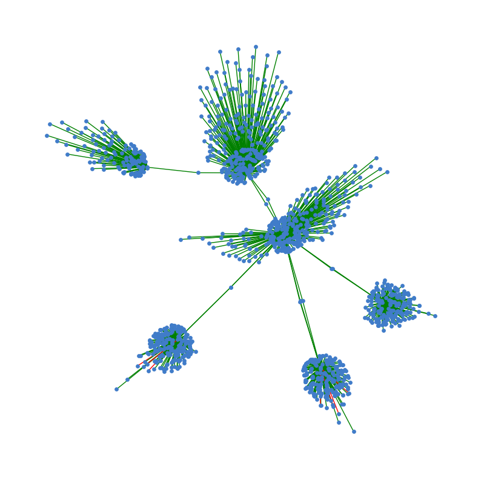

import pandas as pdref
신용카드 거래에 대한 그래프 분석
신용카드 거래 그래프 생성
그래프에서 속성 및 커뮤니티 추출
사기 거래 분류에 지도 및 비지도 머신러닝 알고리즘 적용
import os
import math
import numpy as np
import networkx as nx
import matplotlib.pyplot as plt
%matplotlib inline
default_edge_color = 'gray'
default_node_color = '#407cc9'
enhanced_node_color = '#f5b042'
enhanced_edge_color = '#cc2f04'샘플 = 0
import pandas as pd
df = pd.read_csv("fraudTrain.csv")df["is_fraud"].value_counts()0 1042569
1 6006
Name: is_fraud, dtype: int64df["is_fraud"].value_counts()/len(df)0 0.994272
1 0.005728
Name: is_fraud, dtype: float64- 이분그래프
def build_graph_bipartite(df_input, graph_type=nx.Graph()):
df=df_input.copy()
mapping={x:node_id for node_id, x in enumerate(set(df["cc_num"].values.tolist()+\
df["merchant"].values.tolist()))}
df["from"]=df["cc_num"].apply(lambda x:mapping[x]) #엣지의 출발점
df["to"]=df["merchant"].apply(lambda x:mapping[x]) #엣지의 도착점
df = df[['from', 'to', "amt", "is_fraud"]].groupby(['from','to']).agg({"is_fraud":"sum","amt":"sum"}).reset_index()
df["is_fraud"]=df["is_fraud"].apply(lambda x:1 if x>0 else 0)
G=nx.from_edgelist(df[["from","to"]].values, create_using=graph_type)
nx.set_edge_attributes(G, {(int(x["from"]),int(x["to"])):x["is_fraud"] for idx, x in df[["from","to","is_fraud"]].iterrows()}, "label") #엣지 속성 설정,각 속성의 사기 여부부
nx.set_edge_attributes(G,{(int(x["from"]),int(x["to"])):x["amt"] for idx,x in df[["from","to","amt"]].iterrows()}, "weight") # 엣지 속성 설정, 각 엣지의 거래 금액
return G- 판매자, 고객에게 node 할당
G_bu = build_graph_bipartite(df, nx.Graph(name="Bipartite Undirect"))- 무향 그래프 작성
- 삼분그래프
def build_graph_tripartite(df_input, graph_type=nx.Graph()):
df=df_input.copy()
mapping={x:node_id for node_id, x in enumerate(set(df.index.values.tolist() + #set으로 중복 제거
df["cc_num"].values.tolist() +
df["merchant"].values.tolist()))}
df["in_node"]= df["cc_num"].apply(lambda x: mapping[x])
df["out_node"]=df["merchant"].apply(lambda x:mapping[x])
G=nx.from_edgelist([(x["in_node"], mapping[idx]) for idx, x in df.iterrows()] +\
[(x["out_node"], mapping[idx]) for idx, x in df.iterrows()], create_using=graph_type)
nx.set_edge_attributes(G,{(x["in_node"], mapping[idx]):x["is_fraud"] for idx, x in df.iterrows()}, "label")
nx.set_edge_attributes(G,{(x["out_node"], mapping[idx]):x["is_fraud"] for idx, x in df.iterrows()}, "label")
nx.set_edge_attributes(G,{(x["in_node"], mapping[idx]):x["amt"] for idx, x in df.iterrows()}, "weight")
nx.set_edge_attributes(G,{(x["out_node"], mapping[idx]):x["amt"] for idx, x in df.iterrows()}, "weight")
return G
- 판매자, 고객, 거래에 노드 할당
G_tu = build_graph_tripartite(df, nx.Graph())for G in [G_bu, G_tu]:
print(nx.number_of_nodes(G))1636
1050211커뮤니티 감지
# pip install python-louvainimport networkx as nx
import communityimport community
for G in [G_bu, G_tu]:
parts = community.best_partition(G, random_state=42, weight='weight')communities = pd.Series(parts)communities1049192 0
0 169
1048885 2
1 2
1048746 106
...
1048822 155
1049918 104
1050153 57
1048617 158
1048898 98
Length: 1050211, dtype: int64print(communities.value_counts().sort_values(ascending=False))0 30837
94 14755
118 14020
60 13830
32 11859
...
86 721
8 720
79 716
113 693
125 686
Length: 173, dtype: int64커뮤니티 종류가 늘었따. 96>>113개로
커뮤니티 감지를 통해 특정 사기 패턴 식별
커뮤니티 추출 후 포함된 노드 수에 따라 정렬
communities.value_counts().plot.hist(bins=20)
- 9426개 이상한거 하나있고.. 약간 2000~3000사이에 집중되어 보인다.
graphs = [] # 부분그래프 저장
d = {} # 부정 거래 비율 저장
for x in communities.unique():
tmp = nx.subgraph(G, communities[communities==x].index)
fraud_edges = sum(nx.get_edge_attributes(tmp, "label").values())
ratio = 0 if fraud_edges == 0 else (fraud_edges/tmp.number_of_edges())*100
d[x] = ratio
graphs += [tmp]
pd.Series(d).sort_values(ascending=False)56 5.281326
59 4.709632
111 4.399142
77 4.149798
15 3.975843
...
90 0.409650
112 0.297398
110 0.292826
67 0.277008
18 0.180180
Length: 113, dtype: float64사기 거래 비율 계산. 사기 거래가 집중된 특정 하위 그래프 식별
특정 커뮤니티에 포함된 노드를 사용하여 노드 유도 하위 그래프 생성
하위 그래프: 모든 간선 수에 대한 사기 거래 간선 수의 비율로 사기 거래 백분율 계싼
gId = 10
plt.figure(figsize=(10,10))
spring_pos = nx.spring_layout(graphs[gId])
plt.axis("off")
edge_colors = ["r" if x == 1 else "g" for x in nx.get_edge_attributes(graphs[gId], 'label').values()] #r:빨간색, g:녹색
nx.draw_networkx(graphs[gId], pos=spring_pos, node_color=default_node_color,
edge_color=edge_colors, with_labels=False, node_size=15)
커뮤니티 감지 알고리즘에 의해 감지된 노드 유도 하위 그래프 그리기
특정 커뮤니티 인덱스 gId가 주어지면 해당 커뮤니티에서 사용 가능한 노드로 유도 하위 그래프 추출하고 얻는다.
gId = 56
plt.figure(figsize=(10,10))
spring_pos = nx.spring_layout(graphs[gId])
plt.axis("off")
edge_colors = ["r" if x == 1 else "g" for x in nx.get_edge_attributes(graphs[gId], 'label').values()] #r:빨간색, g:녹색
nx.draw_networkx(graphs[gId], pos=spring_pos, node_color=default_node_color,
edge_color=edge_colors, with_labels=False, node_size=15)사기 탐지를 위한 지도 및 비지도 임베딩
트랜잭션 간선으로 표기
각 간선을 올바른 클래스(사기 또는 정상)으로 분류
지도학습
from sklearn.utils import resample
df_majority = df[df.is_fraud==0]
df_minority = df[df.is_fraud==1]
df_maj_dowsampled = resample(df_majority,
n_samples=len(df_minority),
random_state=42)
df_downsampled = pd.concat([df_minority, df_maj_dowsampled])
print(df_downsampled.is_fraud.value_counts())
G_down = build_graph_bipartite(df_downsampled)1 6006
0 6006
Name: is_fraud, dtype: int64무작위 언더샘플링 사용
소수 클래스(사기거래)이 샘플 수 와 일치시키려고 다수 클래스(정상거래)의 하위 샘플을 가져옴
데이터 불균형을 처리하기 위해서
from sklearn.model_selection import train_test_split
train_edges, test_edges, train_labels, test_labels = train_test_split(list(range(len(G_down.edges))),
list(nx.get_edge_attributes(G_down, "label").values()),
test_size=0.20,
random_state=42)edgs = list(G_down.edges)
train_graph = G_down.edge_subgraph([edgs[x] for x in train_edges]).copy()
train_graph.add_nodes_from(list(set(G_down.nodes) - set(train_graph.nodes)))- 데이터 8:2 비율로 학습 검증
pip install node2vecCollecting node2vec
Downloading node2vec-0.4.6-py3-none-any.whl (7.0 kB)
Requirement already satisfied: joblib<2.0.0,>=1.1.0 in /home/coco/anaconda3/envs/py38/lib/python3.8/site-packages (from node2vec) (1.2.0)
Collecting gensim<5.0.0,>=4.1.2
Downloading gensim-4.3.1-cp38-cp38-manylinux_2_17_x86_64.manylinux2014_x86_64.whl (26.5 MB)
━━━━━━━━━━━━━━━━━━━━━━━━━━━━━━━━━━━━━━━━ 26.5/26.5 MB 71.8 MB/s eta 0:00:0000:0100:01
Collecting tqdm<5.0.0,>=4.55.1
Downloading tqdm-4.65.0-py3-none-any.whl (77 kB)
━━━━━━━━━━━━━━━━━━━━━━━━━━━━━━━━━━━━━━━━ 77.1/77.1 kB 18.6 MB/s eta 0:00:00
Collecting networkx<3.0,>=2.5
Downloading networkx-2.8.8-py3-none-any.whl (2.0 MB)
━━━━━━━━━━━━━━━━━━━━━━━━━━━━━━━━━━━━━━━━ 2.0/2.0 MB 90.4 MB/s eta 0:00:00
Requirement already satisfied: numpy<2.0.0,>=1.19.5 in /home/coco/anaconda3/envs/py38/lib/python3.8/site-packages (from node2vec) (1.24.2)
Requirement already satisfied: scipy>=1.7.0 in /home/coco/anaconda3/envs/py38/lib/python3.8/site-packages (from gensim<5.0.0,>=4.1.2->node2vec) (1.10.1)
Collecting smart-open>=1.8.1
Downloading smart_open-6.3.0-py3-none-any.whl (56 kB)
━━━━━━━━━━━━━━━━━━━━━━━━━━━━━━━━━━━━━━━━ 56.8/56.8 kB 13.6 MB/s eta 0:00:00
Installing collected packages: tqdm, smart-open, networkx, gensim, node2vec
Attempting uninstall: networkx
Found existing installation: networkx 3.0
Uninstalling networkx-3.0:
Successfully uninstalled networkx-3.0
Successfully installed gensim-4.3.1 networkx-2.8.8 node2vec-0.4.6 smart-open-6.3.0 tqdm-4.65.0
Note: you may need to restart the kernel to use updated packages.from node2vec import Node2Vec
from node2vec.edges import HadamardEmbedder, AverageEmbedder, WeightedL1Embedder, WeightedL2Embedder
node2vec_train = Node2Vec(train_graph, weight_key='weight')
model_train = node2vec_train.fit(window=10)Generating walks (CPU: 1): 100%|██████████| 10/10 [00:04<00:00, 2.47it/s]- Node2Vec 알고리즘 사용해 특징 공간 구축
from sklearn.ensemble import RandomForestClassifier
from sklearn import metrics
classes = [HadamardEmbedder, AverageEmbedder, WeightedL1Embedder, WeightedL2Embedder]
for cl in classes:
embeddings_train = cl(keyed_vectors=model_train.wv)
# 벡터스페이스 상에 edge를 투영..
train_embeddings = [embeddings_train[str(edgs[x][0]), str(edgs[x][1])] for x in train_edges]
test_embeddings = [embeddings_train[str(edgs[x][0]), str(edgs[x][1])] for x in test_edges]
rf = RandomForestClassifier(n_estimators=1000, random_state=42)
rf.fit(train_embeddings, train_labels);
y_pred = rf.predict(test_embeddings)
print(cl)
print('Precision:', metrics.precision_score(test_labels, y_pred))
print('Recall:', metrics.recall_score(test_labels, y_pred))
print('F1-Score:', metrics.f1_score(test_labels, y_pred)) <class 'node2vec.edges.HadamardEmbedder'>
Precision: 0.7349397590361446
Recall: 0.15996503496503497
F1-Score: 0.26274228284278534
<class 'node2vec.edges.AverageEmbedder'>
Precision: 0.6856264411990777
Recall: 0.7797202797202797
F1-Score: 0.7296523517382413
<class 'node2vec.edges.WeightedL1Embedder'>
Precision: 0.5737704918032787
Recall: 0.030594405594405596
F1-Score: 0.05809128630705394
<class 'node2vec.edges.WeightedL2Embedder'>
Precision: 0.609375
Recall: 0.03409090909090909
F1-Score: 0.06456953642384106Node2Vec 알고리즘 사용해 각 Edge2Vec 알고리즘으로 특징 공간 생성
sklearn 파이썬 라이브러리의 RandomForestClassifier은 이전 단계에서 생성한 특징에 대해 학습
검증 테스트 위해 정밀도, 재현율, F1-score 성능 지표 측정
비지도학습
k-means 알고리즘 사용
지도학습과의 차이점은 특징 공간이 학습-검증 분할을 안함.
nod2vec_unsup = Node2Vec(G_down, weight_key='weight')
unsup_vals = nod2vec_unsup.fit(window=10)Generating walks (CPU: 1): 100%|██████████| 10/10 [00:04<00:00, 2.30it/s]- 다운샘플링 절차에 전체 그래프 알고리즘 계산
from sklearn.cluster import KMeans
classes = [HadamardEmbedder, AverageEmbedder, WeightedL1Embedder, WeightedL2Embedder]
true_labels = [x for x in nx.get_edge_attributes(G_down, "label").values()]
for cl in classes:
embedding_edge = cl(keyed_vectors=unsup_vals.wv)
embedding = [embedding_edge[str(x[0]), str(x[1])] for x in G_down.edges()]
kmeans = KMeans(2, random_state=42).fit(embedding)
nmi = metrics.adjusted_mutual_info_score(true_labels, kmeans.labels_)
ho = metrics.homogeneity_score(true_labels, kmeans.labels_)
co = metrics.completeness_score(true_labels, kmeans.labels_)
vmeasure = metrics.v_measure_score(true_labels, kmeans.labels_)
print(cl)
print('NMI:', nmi)
print('Homogeneity:', ho)
print('Completeness:', co)
print('V-Measure:', vmeasure)/home/coco/anaconda3/envs/py38/lib/python3.8/site-packages/sklearn/cluster/_kmeans.py:870: FutureWarning: The default value of `n_init` will change from 10 to 'auto' in 1.4. Set the value of `n_init` explicitly to suppress the warning
warnings.warn(
/home/coco/anaconda3/envs/py38/lib/python3.8/site-packages/sklearn/cluster/_kmeans.py:870: FutureWarning: The default value of `n_init` will change from 10 to 'auto' in 1.4. Set the value of `n_init` explicitly to suppress the warning
warnings.warn(
/home/coco/anaconda3/envs/py38/lib/python3.8/site-packages/sklearn/cluster/_kmeans.py:870: FutureWarning: The default value of `n_init` will change from 10 to 'auto' in 1.4. Set the value of `n_init` explicitly to suppress the warning
warnings.warn(
/home/coco/anaconda3/envs/py38/lib/python3.8/site-packages/sklearn/cluster/_kmeans.py:870: FutureWarning: The default value of `n_init` will change from 10 to 'auto' in 1.4. Set the value of `n_init` explicitly to suppress the warning
warnings.warn(<class 'node2vec.edges.HadamardEmbedder'>
NMI: 0.04418691434534317
Homogeneity: 0.0392170155918133
Completeness: 0.05077340984619601
V-Measure: 0.044253187956299615
<class 'node2vec.edges.AverageEmbedder'>
NMI: 0.10945180042668563
Homogeneity: 0.10590886334115046
Completeness: 0.11336117407653773
V-Measure: 0.10950837820667877
<class 'node2vec.edges.WeightedL1Embedder'>
NMI: 0.17575054988974667
Homogeneity: 0.1757509360433583
Completeness: 0.17585150874409544
V-Measure: 0.17580120800977098
<class 'node2vec.edges.WeightedL2Embedder'>
NMI: 0.13740583375677415
Homogeneity: 0.13628828058562012
Completeness: 0.1386505946822449
V-Measure: 0.13745928896382234- NMI(Normalized Mutual Information)
두 개의 군집 결과 비교
0~1이며 1에 가까울수록 높은 성능
- Homogeneity
하나의 실제 군집 내에서 같은 군집에 속한 샘플들이 군집화 결과에서 같은 군집에 속할 비율
1에 가까울수록 높은 성능
- Completeness
하나의 예측 군집 내에서 같은 실제 군집에 속한 샘플들이 군집화 결과에서 같은 군집에 속할 비율
0~1이며 1에 가까울수록 높은 성능
- V-measure
Homogeneity와 Completeness의 조화 평균
0~1이며 1에 가까울수록 높은 성능
비지도 학습에 이상치 탐지 방법
k-means/LOF/One-class SVM 등이 있다.. 한번 같이 해보자.
조금씩 다 커졌넹..
- 지도학습에서 정상거래에서 다운샘플링을 했는데
만약, 사기거래에서 업샘플링을 하게되면 어떻게 될까?